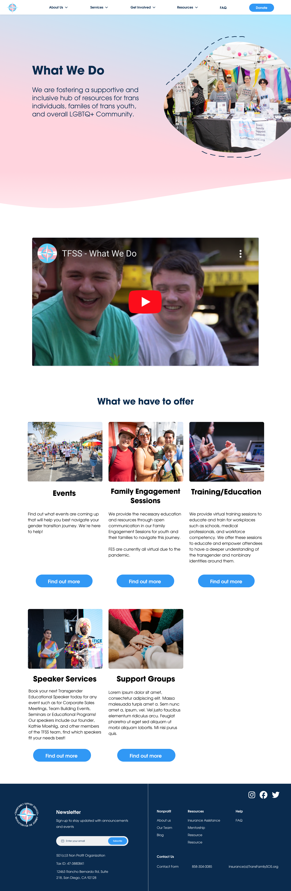
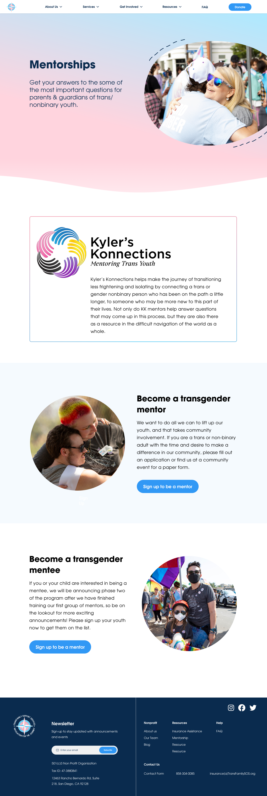
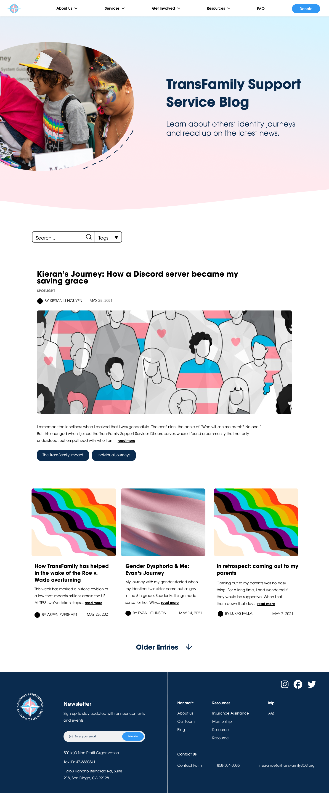
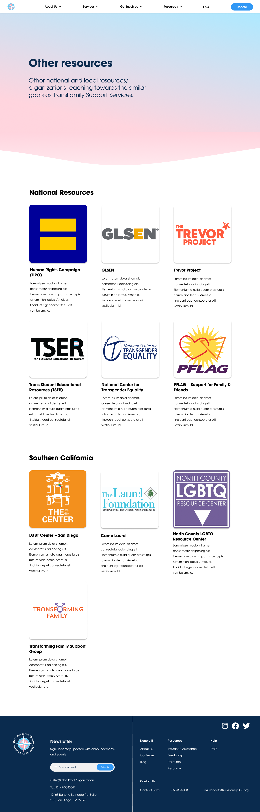
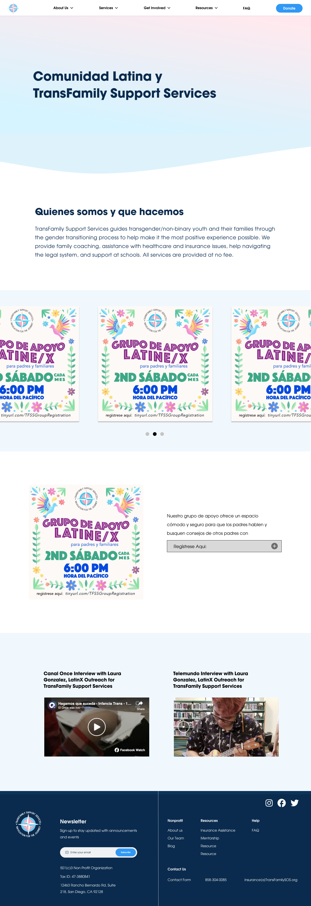
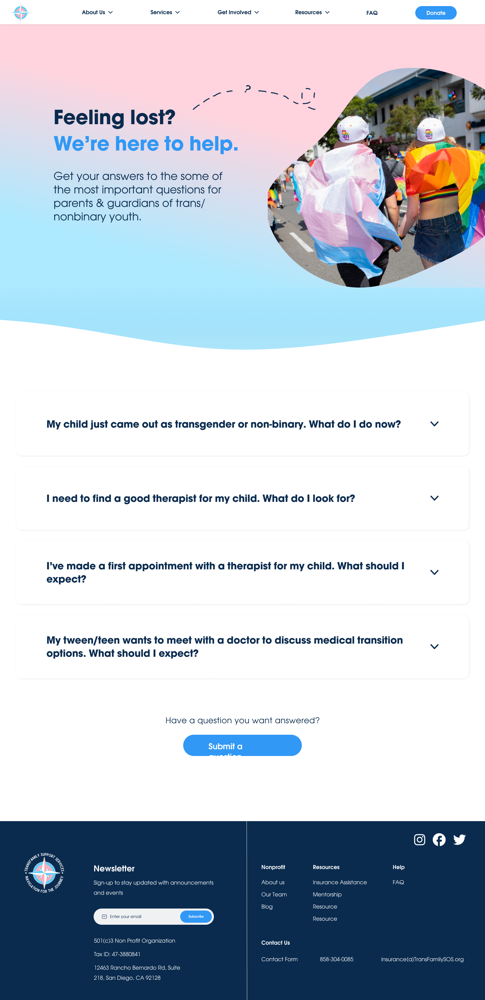

TransFamily Support Services
RESEARCH / UX DESIGN / WEB BUILDING
TransFamily Support Services is a San Diego based LGBT non-profit that aims to be a one stop shop for helping transgender youth navigate through their journey. We saw that their current website lacks identity and is disorganized due to the use of basic typefaces, being difficult to navigate, and can do more in terms of personability and connecting to their audience.
Preliminary Research
Before mocking up designs or conducting any formal research, we needed to understand the current site and any issues it may have. This gave us a sense of direction and allowed us to estimate the scope of our project.
Web Audit
The first thing we did was an initial audit of the site in order to identify at a glance some issues with the site. We based our audit off of usability heuristics from NNgroup.
Consistency & Standards
Navigation bar is on the side – Websites usually have it on top.
Error Prevention
Labels in nav bar don't have enough padding.
Recognition Rather than Recall
Current page is not highlighted in navigation bar – how did I get here?
Aesthetic & Minimalist Design
Too many images – the images used are also stock images
User Research
After identifying some initial issues, we needed to understand our users and how they interact with the site. We performed user research in the form of surveys and interviews.
Surveys & Interviews
We interviewed and surveyed a total of 30 users to gather usability insights for us, and demographic information for the organization. When asked about the website, we found that:
- 60% had a hard time understanding what TransFamily Support Services is from their website.
- 60% had difficulty finding events and services offered.
- The navigation bar on the side of the website is unintuitive.
- The labels on the navigation bar are vague and unclear.
Affinity Map
We also created an affinity map based on insights and grouped them by difficulties users encountered from tasks. this allowed us to visualize data and identify trends.
TRANSLATING USER RESEARCH INTO A PROBLEM STATEMENT
How might we create a more accessible online identity for TransFamily Support Services in order to increase discoverability and provide more support for transgender and nonbinary individuals as well as their loved ones?
Information Architecture
One of the main things I wanted to tackle was the information architecture of the site since over 60% of users expressed issues regarding navigation.
I created multiple site maps and incorporated stakeholder feedback to redo the navigation of the site.
Visual Elements
Now that we had a solid foundation of research, some early prototypes of screens, and an idea of what we wanted we to fix, we needed to consider how we wanted the site to look visually. Not only this, but we all needed to be on the same page so that the site maintained consistency across pages.
Branding
The client expressed they wanted a rebrand, but wanted to stay close to the colors of the Transgender flag. To help visualize this, we created a moodboard based off the colors of the Transgender flag.
Style Guide
Now that we could visualize our brand, we brought it to life by creating a style guide with typography, colors, buttons, and other reusable components. This ensured designs were consistent across the site and allowed developers to easily componentize everything.
High Fidelity Prototypes
Based on elements from our design system, we created high fidelity prototypes with visual elements and content fully incorporated.
We then presented our designs to stakeholders and conducted final rounds of testing to finalize our designs before implementation.
Home Page
We wanted to make a landing page that encapsulates all of what TransFamily Support Services does and what makes them unique. We also included testimonials and a form that recommends resources for personability.

Who We Are
Their current who we are page is not descriptive enough and doesn't give any insight into who is behind the organization. Thus, we completely revamped the page to showcase the humans who make the organization run.
Other Pages
This was a huge project with more pages and iterations than I can list. For the sake of brevity, here are some highlights and other pages we created.
What We Do
Mentorships
Blog
Other Resources
Latinx
FAQ
Implementation
We implemented the webpages on Wordpress, the organization's web builder of choice. We also created components for elements on our style guide. This made it so the site is easily scalable and our client can pick up where we left off.
Next Steps
If given more time and resources to work with TransFamily Support Services, we would:
- Thoroughly plan out components for A/B testing
- Include more usability tests for our final round of validation
- Implement remaining website pages, navigation bar, and footer
Takeaways
Design is a bumpy road
The process of designing beautiful experiences can be anything but beautiful. Embrace the chaos and jump at every opportunity to improve.
Communication is Key
Whether it be with stakeholders or other group members, communication and trust at every step of the way led to efficient and effective progress.
Deadlines are Crucial
Setting dates for when we wanted to have deliverables finished held group members accountable and ensured we progressed (even if it was all mostly done the night before).
Get Feedback
Our end product was greatly improved thanks to feedback from our mentors (Tarrea Tolbert, Alex Li, & Chynna Tumalad), our TFSS point of contact (Aspen Everhart), and other builders.